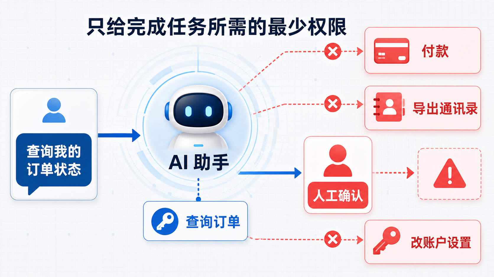
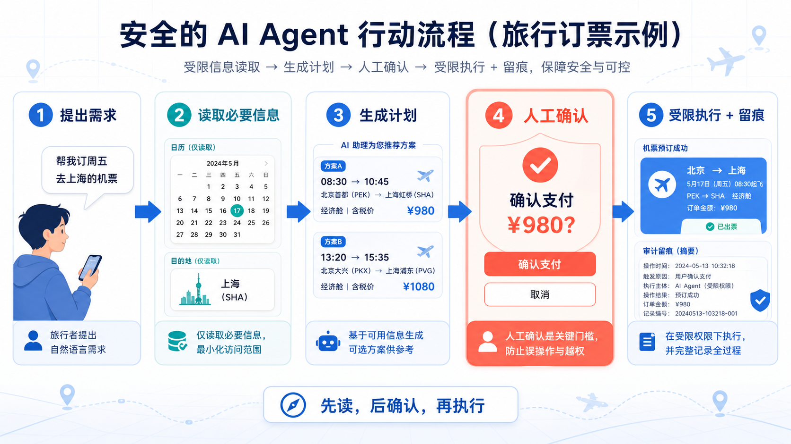

为什么这个概念重要？
当 AI 只能聊天时，错误多数停留在文字里；当 AI 能读邮件、查订单、订机票、发消息或改数据时，错误就可能变成真实世界的行动。此时最关键的问题不再只是“它答得对不对”，而是“它到底被允许做什么”。
即使模型误解了任务、网页里出现误导文字，或工具返回异常，它也只能碰到被授予的那一小块能力。
发邮件、付款、删除资料这类动作可以设置确认门槛，而不是让模型从一句自然语言直接跳到执行。
每次授权、确认和调用都能留下记录。出了问题，团队可以回看“谁授权、做了什么、为什么做”。
一个直观类比：临时通行证，不是万能钥匙
想象你请一位可靠的同学替你去学校行政楼拿“本周课程表”。他需要什么？也许只需要在前台领取一张只能进入资料室、只能在今天使用、只能取一份课程表的临时通行证。
他不需要教务处主任办公室的钥匙，不需要财务室保险柜密码，也不需要全校通讯录。因为那些能力对“取课程表”毫无帮助，却会把一旦出错的后果放大。

工作原理：从“想做”到“被允许做”
大模型擅长理解语言、提出计划和生成下一步建议；但“能不能调用一个工具”应由外部系统决定。一个可靠的 Agent 会把理解任务与获得权限分开：模型可以建议行动，权限系统决定行动是否真的发生。

关键术语解释
| 最小权限 | 只向用户、程序或服务授予完成指定任务所必需的最低资源与授权。 | 白话：只发当日所需的临时通行证，不发万能钥匙。 |
|---|---|---|
| 权限（Permission） | 系统允许某个主体执行特定操作或访问特定资源的规则。 | 白话：“你能看订单，但不能改订单”的开关。 |
| 作用域（Scope） | 授权令牌可访问资源与可执行操作的具体范围，常用来限制 API 能力。 | 白话：一张写明“只能看日历”的门票。 |
| 只读（Read-only） | 允许查看信息、不允许修改或发送的访问方式。 | 白话：可以翻书，但不能在书上涂改。 |
| 人工确认 | 在高风险或不可逆动作前，由用户或工作人员明确批准的控制步骤。 | 白话：AI 可以把支付页面填好，但“确认付款”由你按下。 |
| 审计日志 | 按时间记录谁请求、谁批准、调用了什么工具及结果如何的可追溯记录。 | 白话：一份能回放“发生过什么”的操作流水账。 |
一个真实应用案例：企业 AI Agent 连接工作工具
现实中的企业 Agent 已可连接日历、云盘、聊天与其他业务工具。以 OpenAI 的 ChatGPT Workspace Agents 为例：管理员可以为特定写操作设置自定义审批，也可用连接器行动约束限制一个连接器能做什么。这反映的不是“AI 特别危险”，而是一个基本事实：连接上真实工具后，能力必须与范围一同设计。
下面是一个贴近真实产品的权限分层示意，不把一次模糊请求直接等同于一次不可逆支付。
读取用户已允许的日历空档；搜索符合政策的班次；比较价格、时间与转机；生成两套方案；清楚展示总价和退改条件。
用户：下周去上海开会，帮我安排
AI：我找到两班符合政策的航班，分别是……不能读取无关同事的行程；不能用新信用卡直接付款；不能在未确认的情况下订票；不能把完整行程发给不在白名单内的人。
支付前：显示金额 + 乘客 + 退改规则
执行前：用户确认 + 后端验证 + 审计留痕常见误区：别把“能做”误当成“该做”
- 误区一：最小权限就是尽量什么都不让 AI 做。不对。目标不是让 Agent 失去用处，而是让每项能力与具体任务匹配。查日历给只读权限，订票前再征得确认，都是更顺畅也更安全的设计。
- 误区二：有了系统提示词，就不需要权限控制。不对。提示词是语言层面的规则；权限是系统层面的硬边界。模型可能犯错，外部工具的凭证和后端校验不能只靠一句“请谨慎”。
- 误区三：一次“允许全部”以后就不用再管。不对。授权应有范围、有效期与复核。任务变了、风险变了、连接器变了，就应重新评估是否仍需要那些能力。
- 误区四：只有付款才算高风险。不对。删除资料、导出联系人、发送邮件、改权限、公开内部内容也可能造成重大影响；“可逆性、隐私、影响范围”都要一起看。
- 误区五：AI 做了记录，就一定安全。不对。日志帮助追溯和改进，不能阻止一次已经发生的越权操作。好的安全设计是在执行前就缩小能力范围。
总结：3 句话讲清核心认知
复习问题：检验你是否真正理解
- 一个 AI 助手的任务只是“查订单状态”。请列出它至少不该拥有的两种权限，并解释为什么这些权限会放大风险。
- 为什么“系统提示词写着不许付款”仍不如“支付工具默认不可用，付款必须经用户确认”可靠？两者分别解决了什么问题？
- 如果你要设计一个帮你整理会议的 AI，哪些操作可以默认只读？哪些操作应在发送或删除前要求确认？请按风险说明理由。